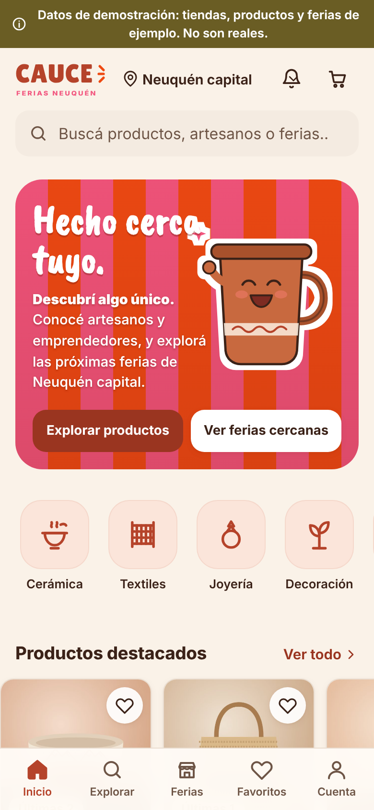
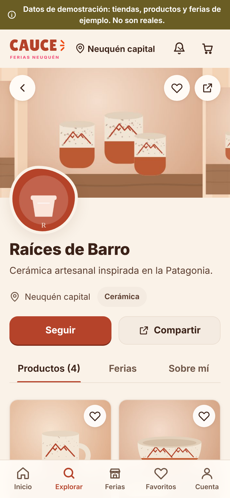
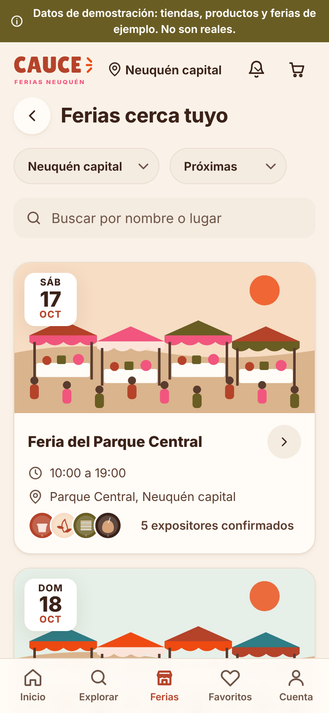

Hecho cerca tuyo.
Comunidad Fundadora
Estamos creando CAUCE · Ferias Neuquén junto a artesanos, feriantes y emprendedores. Queremos escucharte antes de lanzar: sumate desde el principio.
Esta demostración de la propuesta visual de CAUCE · Ferias. Encuestas y preinscripción pendientes de activación.
La plataforma todavía no está abierta al público. Lo que mostramos más abajo es una demostración con datos ficticios.
Qué es CAUCE
Una plataforma para las ferias de Neuquén y alrededores, pensada para quienes hacen y venden cerca tuyo.
Tu tienda, también fuera de la feria
Un catálogo con fotos y precios, con enlace y QR para compartir.
Pedidos ordenados
Que te encarguen y retiren en tu puesto, en un lugar acordado o con tu envío.
Las ferias, en un calendario
Quién expone, dónde, cuándo y cómo llegar. Las organizaciones publican y asignan puestos.
Lo que queremos resolver
- Vender sólo los días de feria.
- Pedidos y encargos que se pierden entre mensajes.
- No tener un catálogo fácil de mostrar y compartir.
- Enterarse tarde de las ferias o de cómo conseguir puesto.
- Que quien te compró una vez no sepa cómo volver a encontrarte.
Por eso hacemos encuestas: para confirmar con ustedes qué es lo más importante.
Lo que estamos construyendo para artesanos
Previsto Todavía no está disponible: el piloto empieza con un grupo chico.
Retiro en tu puesto
Te compran antes y pasan a buscar por la feria.
El pago es directo
Efectivo o transferencia entre quien compra y vos. CAUCE no recibe ni retiene tu dinero.
Desde el teléfono
Cargás productos con fotos, ves tus pedidos y avisás cuando está listo.
Inscripción a ferias
Te anotás y ves tu puesto asignado, sin planillas sueltas.
Programa fundador
- Sin costo inicial durante la etapa fundadora.
- Prioridad en el lanzamiento.
- Te ayudamos a crear tu tienda.
- Tus sugerencias cuentan.
Sin compromiso de contratación. Los cupos del piloto son limitados.
Las inscripciones se habilitarán cuando estén verificadas.
Así se va a ver
Demostración Pantallas reales de la versión en desarrollo, con tiendas y productos ficticios. Todavía no se puede comprar ni abrir una tienda.



Encuestas
Son 2 o 3 minutos. Las encuestas son anónimas: tu contacto sólo se pide al final, si querés que te escribamos.
Artesanos, feriantes y emprendedores
Contanos cómo vendés y qué herramientas te ayudarían.
Próximamente Encuesta en preparación. No se recopilan datos en esta demo.
Organizadores de ferias
Inscripciones, asignación de puestos y calendario.
Próximamente Encuesta en preparación. No se recopilan datos en esta demo.
Quienes compran en las ferias
Encontrar puestos y encargos de productores cercanos.
Próximamente Encuesta en preparación. No se recopilan datos en esta demo.
Contacto
¿Organizás una feria, tenés un emprendimiento o querés contarnos algo?
Por ahora, esta es una vista previa visual. Consultas desde LUNA Proyectos.